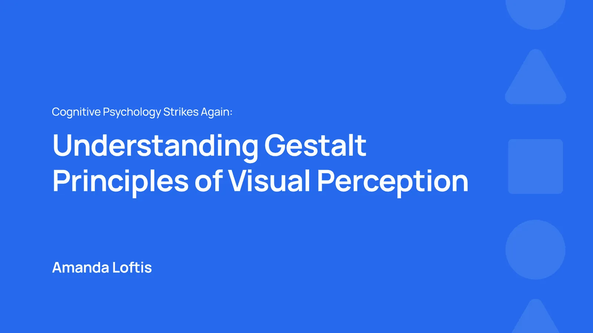
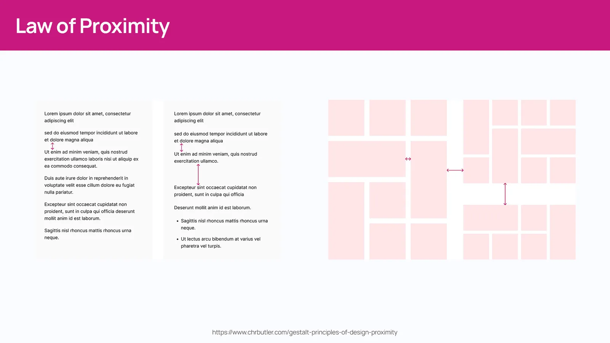
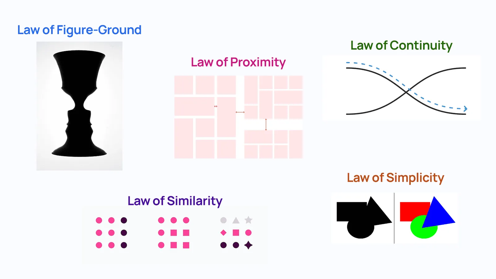
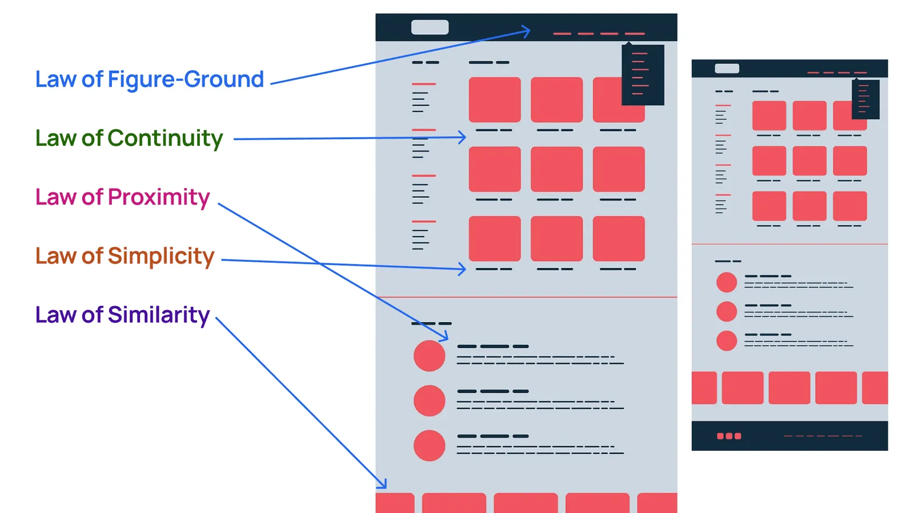
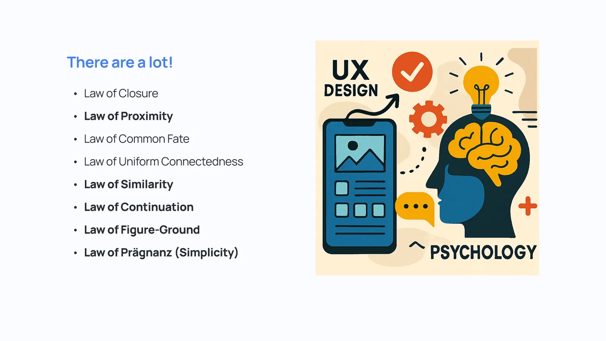

← See all projects
Understanding Gestalt Principles of Visual Perception
In this presentation, I go over the basics of gestalt design principles as well as the top five that apply most to UX design. At the end, you'll find an exercise you can try with your team to see if you can identify gestalt principles in the wild.




